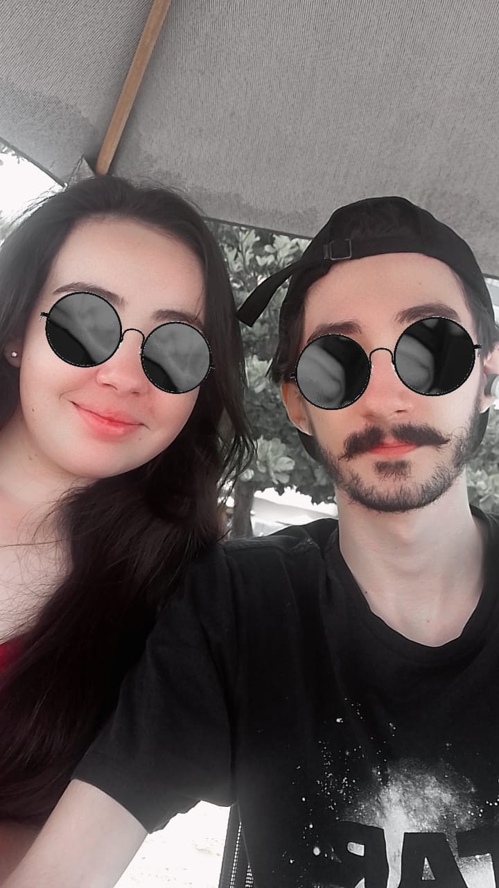
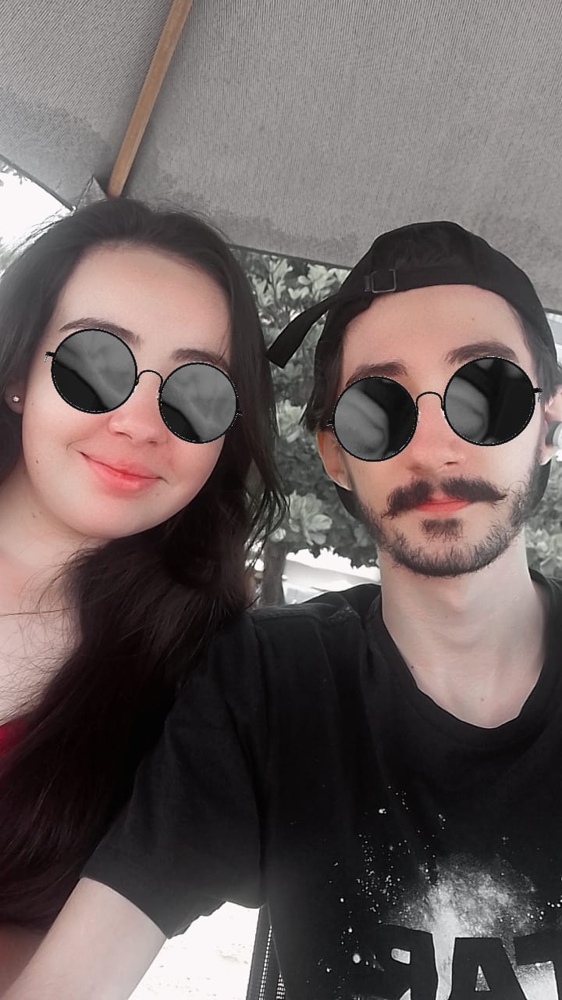

A primeira vez que eu te viüíï
Lembro como se fosse ontem a primeira vez que percebi você naquele mercado,você parecia tão fofa com seu delineado colorido e eu fiz questão de pelo menos dar um oi e quem sabe uma pequena conversa pra descobrir mais sobre aquela menina que me encantou desde o primeiro momento.
Nossa primeira viagem ✈️
Uma viagem que por mais em cima da hora ou das pequenas dificuldades foi mágico,gostei muito de aproveitar com você aquele momento juntos,os pequenos passeios que tivemos,lugares que conhecemos,fotos que tiramos,beijos que damos e até os perrengues que passamos.
 


18/03üíç
A data mais importante pra nós hoje,até hoje eu acho dificil de acreditar o quão sortudo eu sou em ter você como minha namorada,uma pessoa talentosa,esforçada,linda,carinhosa,que sempre lembra de mim,me da os presentes mais romanticos que eu guardo com muito carinho.Eu amo você cada dia mais e não quero que isso acabe nunca,você me faz feliz,toda vez que eu me lembro a pessoa incrivel que eu namoro eu me sinto completo.Todas as fotos que você me manda,as conquistas que compartilha comigo,nossos momentos preciosos juntos,tudo vale a pena e me deixa mais feliz toda vez que eu lembro.
Nosso futuro juntos
Algumas fotos de momentos que tivemos pra você relembrar uma parte do que somos,do amor que eu sinto por você e que a cada dia que passa a gente vai construindo nosso futuro mas eu nunca vou esquecer daquela sensacão de te ver pela primeira vez,da nossa primeira conversa,da primeira vez que demos as mãos,do nosso primeiro beijo,do primeiro eu te amo e de como você me faz feliz.